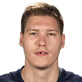

CAPITALS
| Photo |
Name |
Number |
Position |
Shot |
Height |
Weight |
Birthday |
Hometown |
|
Nicklas Backstrom |
19 |
C |
L |
6' 1" |
210 |
Nov 23, 1987 |
Gävle, SWE |
 |
Travis Boyd |
72 |
C |
R |
5' 11" |
185 |
Sep 14, 1993 |
Hopkins, MN, USA |
 |
Andre Burakovsky |
65 |
LW |
L |
6' 3" |
201 |
Feb 9, 1995 |
Klagenfurt, AUT |
|
Brett Connolly |
10 |
RW |
R |
6' 3" |
195 |
May 2, 1992 |
Campbell River, BC, CAN |
|
Nic Dowd |
26 |
C |
R |
6' 2" |
197 |
May 27, 1990 |
Huntsville, AL, USA |
|
Lars Eller |
20 |
C |
L |
6' 2" |
207 |
May 8, 1989 |
Rodovre, DNK |
|  |
Dmitrij Jaskin |
23 |
RW |
L |
6' 2" |
216 |
Mar 23, 1993 |
Omsk, RUS |
|
Evgeny Kuznetsov |
92 |
C |
L |
6' 2" |
204 |
May 19, 1992 |
Chelyabinsk, RUS |
|
T.J. Oshie |
77 |
RW |
R |
5' 11" |
195 |
Dec 23, 1986 |
Everett, WA, USA |
|
Alex Ovechkin |
8 |
LW |
R |
6' 3" |
235 |
Sep 17, 1985 |
Moscow, RUS |
|
Devante Smith-Pelly |
25 |
RW |
R |
6' 0" |
223 |
Jun 14, 1992 |
Scarborough, ON, CAN |
|
Chandler Stephenson |
18 |
C |
L |
6' 0" |
203 |
Apr 22, 1994 |
Saskatoon, SK, CAN |
|
Jakub Vrana |
13 |
LW |
L |
6' 0" |
197 |
Feb 28, 1996 |
Prague, CZE |
|
Tom Wilson |
43 |
RW |
R |
6' 4" |
218 |
Mar 29, 1994 |
Toronto, ON, CAN |
| Photo |
Name |
Number |
Shot |
Height |
Weight |
Birthday |
Hometown |
|
Madison Bowey |
22 |
R |
6' 2" |
198 |
Apr 22, 1995 |
Winnipeg, MB, CAN |
|
John Carlson |
74 |
R |
6' 3" |
218 |
Jan 10, 1990 |
Natick, MA, USA |
|
Christian Djoos |
29 |
L |
6' 0" |
169 |
Aug 6, 1994 |
Gothenburg, SWE |
|
Michal Kempny |
6 |
L |
6' 0" |
194 |
Sep 8, 1990 |
Hodonin, CZE |
|
Tyler Lewington |
78 |
R |
6' 2" |
202 |
Dec 05, 1994 |
Edmonton, AB, CAN |
|
Matt Niskanen |
2 |
R |
6' 1" |
203 |
Dec 6, 1986 |
Virginia, MN, USA |
|
Dmitry Orlov |
9 |
L |
5' 11" |
212 |
Jul 23, 1991 |
Novokuznetsk, RUS |
|
Brooks Orpik |
44 |
L |
6' 3" |
217 |
Sep 26, 1980 |
San Francisco, CA, USA |
|
Jonas Siegenthaler |
34 |
L |
6' 3" |
206 |
May 06, 1997 |
Zurich, CHE |
| Photo |
Name |
Number |
Height |
Weight |
Birthday |
Hometown |
|
Pheonix Copley |
1 |
6' 4" |
200 |
Jan 18, 1992 |
North Pole, AK, USA |
|
Braden Holtby |
70 |
6' 2" |
211 |
Sep 16, 1989 |
Lloydminster, SK, CAN |